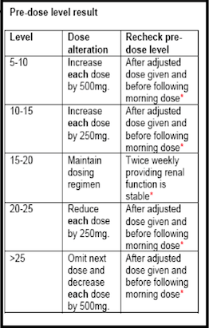
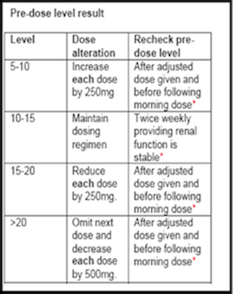

(c) Darragh O'Connor
Note: Unless renal function is deteriorating or specifically advised DOESES SHOULD NOT BE HELD WHILST AWAITING LEVELS
Please seek advice from Pharmacy or Clincial Microbiology if in doubt.
Has patient serious infection such as enocarditis, osteomyelitis, bloodstream infection, meninigitis or hospital acquired pneumonia caused by S. aureus?
Target level is 15-20mg/L
Is level 15-20mg/L? 
Target level is 10-15mg/L.
Is level 10-15mg/L?